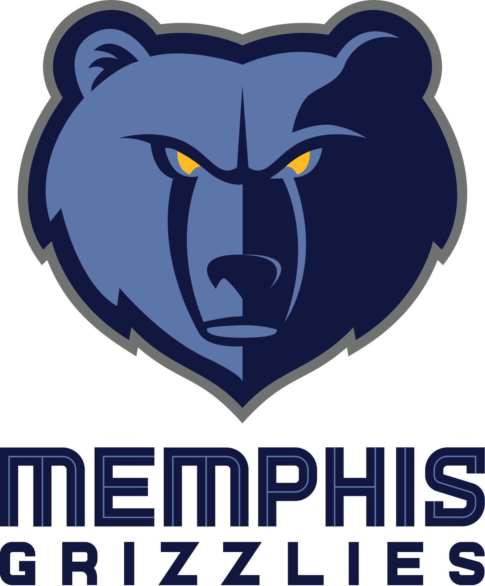

Memphis Grizzlies (anteriormente Vancouver Grizzlies) es un equipo de baloncesto de la NBA con sede en Memphis, Tennessee. Es miembro de la División Suroeste dentro de la Conferencia Oeste. Disputan sus partidos como local en el FedExForum, con capacidad para 18.119 espectadores.
En la temporada 2010-2011 se clasifican octavos en Play Offs después de varios años sin conseguirlo. En la primera eliminatoria dieron la sorpresa venciendo al campeón de la liga regular, los San Antonio Spurs por 4-2. Posteriormente estuvieron cerca de llegar a finales de conferencia contra Oklahoma City Thunder, pero fueron derrotados por 4-3. Destacando la baja de su jugador franquicia Rudy Gay durante todas las eliminatorias por el título.
A pesar de contar con Marc Gasol y Mike Conley como líderes indiscutibles del equipo, en la temporada 2017-18 cosecharon el peor récord de la franquicia de los últimos diez años (22-60), quedando fuera de las eliminatorias por el título, por primera vez en siete temporadas.
 Indice
Indice